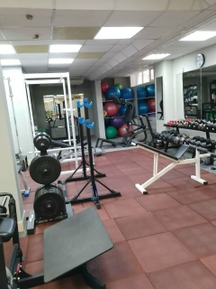

От хотелки
к проверяемой задаче
Требования, границы, модель, проверка.
Требования, границы, модель, проверка.
Умеет почти всё.
Не спорит.
Не устаёт.
Делает практически мгновенно.
Что всё ещё может пойти не так?
Аладдин влюблён в Джасмин.
Джасмин — принцесса. По правилам она должна выйти замуж за принца.
Значит, нужен принц.
«Тут нужен принц. Сделаешь?»
Формулировка допускала именно такой ответ.
Джинн ошибся?
Но что значит точно?
Нужно описать всё до последней мелочи?
Слишком мало:
«Сделай хорошо. Плохо не делай».
Слишком много:
84 страницы очень точного ничего.
Количество текста ≠ точность задачи.
Цель · граница · важные правила · свобода исполнителя · проверка
Требования уменьшают пространство неправильных решений.
На сплаве мы знаем финиш, примерный срок, запас и ограничения.
Но не обязаны заранее знать место каждой ночёвки.
Путь может уточняться. Рамка остаётся.
Хороший вопрос — тот, ответ на который может изменить решение.
Чем дороже и необратимее ошибка, тем больше имеет смысл выяснить заранее.

Владелец небольшого тренажёрного зала ведёт клиентов, абонементы и платежи вручную.
«Хочу автоматизировать зал».
Продажи?
Абонементы?
Вход?
Расписание?
Тренеры?
Оборудование?
Аналитика?
Нужно выбрать задачу, а не моделировать весь зал.
Продажа абонемента
+
ответ на вопрос: может ли клиент войти сегодня?
Всё остальное пока за границей.
Предложение зала.
Конкретное купленное право.
Передача денег и её состояние.
Можно ли войти сегодня.
Клиент купил абонемент.
Через месяц тариф стал стоить 3500 ₽.
Что изменилось у клиента?
Если две реальные ситуации требуют разных действий, а наша модель превращает их в одну — модель слишком груба.
«У клиента есть абонемент» не различает действующий и просроченный.
Цвет гантелей этого не исправит.
Проверяемость превращает пожелание в договорённость о результате.
Хотелка
→ проблема
→ рамка и ограничения
→ достаточная модель
→ проверяемые примеры
→ реализация и проверка
→ уточнение рамки
Техническая точность — это точность там, где различие меняет решение.